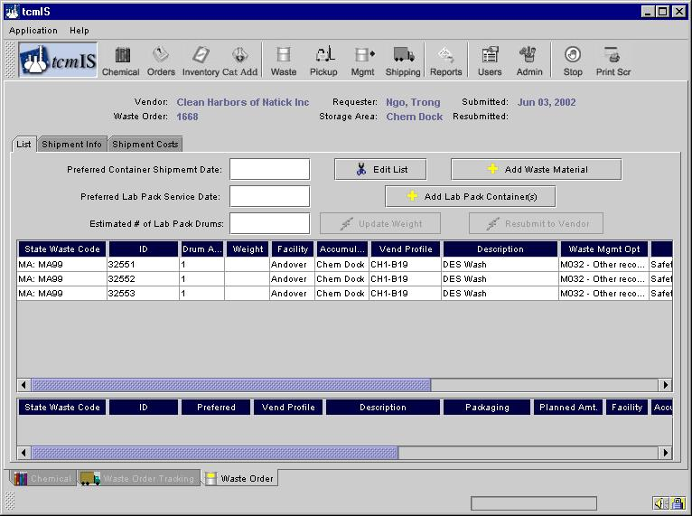
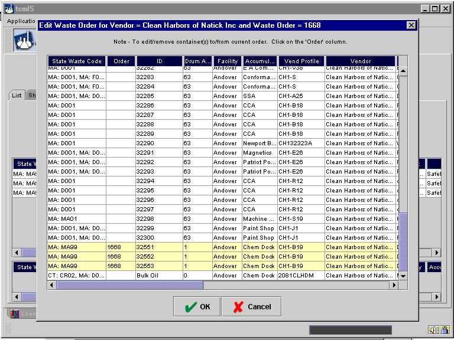
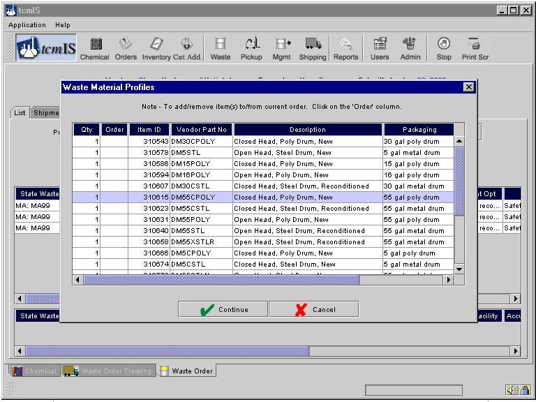
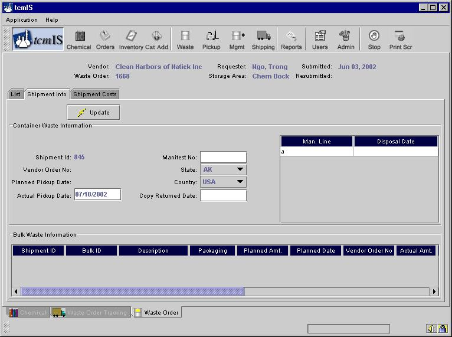
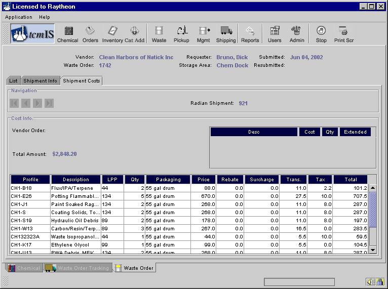

Waste Order
The header for the Waste Order screen presents overall information for this order. Access to detailed information or order management functions is given through the upper tabs as shown in the figure, these are:
- List - this is the screen shown on figure containing a list of the wastes on the order;
- Shipment Info - this screen keeps records on the shipment, including full or less-than-truck loads, date shipped, and status of returned manifests and certificates of destruction; and
- Shipment Cost - the cost information for the shipments can be viewed here.

From the List tab, the order can be viewed and edited by selecting the Edit List button. Once edited, the order can be sent by clicking the Submit to Vendor (Resubmit to Vendor if changed after submittal)button. The entire order can be cancelled by clicking the Cancel Submitted Order button.
The feature shown of edit list shown below allows shipments to be modified up to the day of the shipment so that the CGMP waste supplier can pickup the new additions to the pickup request where possible.

A container can be added to the shipment order by clicking on that line. The added container will now be highlighted yellow, and will contain the Order shipment number. A container can be removed from the shipment order by clicking on the line also. It will then lose it's yellow highlight and Order shipment number.
A point of caution exists in that the CGMP waste supplier may be limited either in the available capacity remaining on the truck or the compatibility requirements related to existing containers on the truck. This feature provides the user with flexibility for waste containers to be added at the last minute, while still keeping an accurate accounting of the waste shipment on tcmIS.
You can also add waste materials to the order so that the vendor can drop them at your location when he is there to pick up the waste. The figure below illustrates the above

You can also add Lab Pack Container(s) in the same way
From the Shipment Info tab, the Waste Manger will enter information that is generally not known until vendor pickup or later. This information is required for recordkeeping and reporting or costing.

The Shipment Cost tab displays the price for each line item of the order, overall shipment charges, and the total shipment cost.
